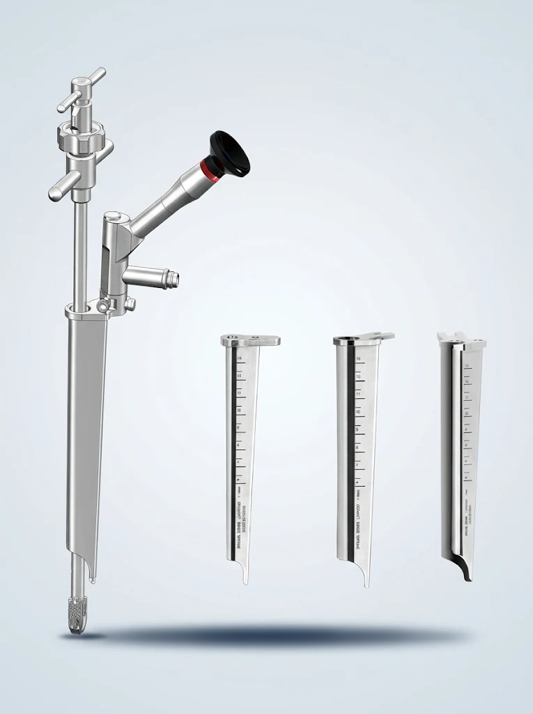

01 / 技术原理与术式创新
双通道解耦与水/气双介质协同
VBE/UBD 系统在单一微创切口内构建了相互独立的观察通道与操作通道，消除了传统单孔内镜的操作自由度限制，并支持术中水介质与空气介质的自由切换——兼顾水下高清止血减压与空气下高效植骨融合。基于该平台，团队系统建立了微创经椎间孔腰椎椎体间融合术（UBD-TLIF）及经椎弓根硬膜前方减压术（UBD-TADD）等系列术式，并主编出版了中英文专著（科学出版社，2021；Springer，2023）。
SPINE SURGERY & RESEARCH
上海市同济大学附属东方医院骨科主任
博士研究生导师
V形双通道双介质脊柱内镜（VBE / UBD）开创者
聚焦脊柱内镜创新与数字化、智能化微创研究。

01 / ABOUT

三十余年脊柱外科临床与科研工作，持续关注脊柱疾病诊治与微创技术发展。
贺石生，博士、主任医师、教授、博士研究生导师。现任上海市东方医院 / 同济大学附属东方医院骨科主任、脊柱微创中心主任，同济大学医学院脊柱疼痛医学研究所所长。
长期从事脊柱外科临床和科研工作，擅长脊柱常见及疑难疾病的手术治疗，并致力于脊柱微创技术、器械设计、医生培训和相关研究。
02 / RESEARCH & INNOVATION
从临床问题出发，连接脊柱内镜、数字导航、人工智能与生物材料研究。
从中国原创器械构型到复杂脊柱微创的临床转化
针对传统单通道脊柱内镜在复杂减压与融合手术中“器械同轴干扰”及单一介质视野受限的临床痛点，团队在国际上首次提出并研发了单孔双通道双介质脊柱内镜系统，构建了涵盖原创器械定型、标准化微创术式及中英文专著体系的完整临床方案。
01 / 技术原理与术式创新
VBE/UBD 系统在单一微创切口内构建了相互独立的观察通道与操作通道，消除了传统单孔内镜的操作自由度限制，并支持术中水介质与空气介质的自由切换——兼顾水下高清止血减压与空气下高效植骨融合。基于该平台，团队系统建立了微创经椎间孔腰椎椎体间融合术（UBD-TLIF）及经椎弓根硬膜前方减压术（UBD-TADD）等系列术式，并主编出版了中英文专著（科学出版社，2021；Springer，2023）。
02 / 临床循证与转化进展
系列临床对照研究（包括 VBE-TLIF 与传统 MIS-TLIF 的对比队列）证实，该技术在取得同等确切椎间融合率与远期功能改善的基础上，进一步降低了微创入路创伤并优化了术后早期恢复指标。目前，该原创内镜系统已完成产业化转化并推广至国内外多家医疗中心，正进一步开展多中心前瞻性临床循证研究。
03 / 代表性文献
DOI: 10.1007/s00586-023-07746-w
查看文献 ↗DOI: 10.1111/os.13050
查看文献 ↗DOI: 10.1051/978-2-7598-2907-1
查看文献 ↗DOI: 10.1007/s00586-023-08096-3
查看文献 ↗神经根高精度自动分割与术前量化路径规划
针对脊柱 MRI/CT 影像中腰骶神经根与周围软组织边界模糊、术前手术难度缺乏客观量化标准的痛点，团队开发了面向脊柱微创的深度学习分割与术前决策算法，服务于个性化手术规划与神经保护。
01 / 算法突破
针对临床高质量像素级标注样本稀缺的瓶颈，团队引入并改进了半监督与少样本生成对抗网络（Semi-cGAN / Fewshot-GAN）架构，实现了对 L4–S1 腰骶神经根、椎间盘及周围骨性通道的高精度自动三维重建，在术前清晰呈现神经根受压形态与变异走形。
02 / 临床决策
基于三维重建提取的解剖几何参数（如髂嵴高度、椎间孔狭窄程度及横突形态），团队构建了机器学习预测模型，可在术前自动量化评估 L5/S1 等高难度节段经皮内镜椎间盘切除术（PETD）的穿刺难度，并辅助生成最优工作套管置入路径。
03 / 代表性文献
DOI: 10.3174/ajnr.A6070
查看文献 ↗DOI: 10.1016/j.ijsu.2020.08.036
查看文献 ↗DOI: 10.1007/978-3-030-39752-4_5
查看文献 ↗仿生矿化骨修复支架与脊柱转移瘤诊疗一体化载体
围绕脊柱融合术后骨缺损修复与恶性骨肿瘤/脊柱转移瘤精准治疗两大临床挑战，团队开展深度医工交叉研究，研发具有生物矿化活性的骨修复材料及骨靶向高分子纳米递送系统。
01 / 骨组织工程
受天然骨组织生物矿化微环境启发，团队设计了负载碱性磷酸酶（ALP）及仿生矿化纳米颗粒的复合水凝胶与多孔支架材料。该体系能够在缺损局部高效诱导羟基磷灰石沉积与成骨分化，并促进早期血管化，旨在加速脊柱椎间融合与大段骨缺损修复。
02 / 肿瘤靶向治疗
针对脊柱溶骨性转移瘤药物局部浓度低、骨破坏难以逆转的难题，团队合成了表面修饰双膦酸盐或天冬氨酸寡肽等骨亲和基团的聚合物囊泡载体，实现化疗药物与基因治疗核酸向骨病灶的高效靶向富集，兼具成像示踪、肿瘤杀伤与破骨抑制多重功能。
03 / 代表性文献
DOI: 10.1016/j.biomaterials.2020.120345
查看文献 ↗DOI: 10.1021/acsnano.5c04743
查看文献 ↗DOI: 10.1021/acsami.2c05794
查看文献 ↗罕见脊柱肿瘤风险分层模型与临床决策工具
针对脊柱原发及转移性肿瘤临床异质性强、缺乏个体化预后评估工具的现状，团队依托大样本临床队列与统计建模方法，构建高精度生存预测模型与临床在线决策工具，辅助制定个体化外科与综合治疗方案。
01 / 预后建模
围绕骨孤立性浆细胞瘤等脊柱肿瘤患者，团队系统整合人口学特征、肿瘤解剖部位、病理分级及治疗模式等多维变量，构建并验证了多因素预后列线图及可视化在线预测工具，实现了对患者总生存率与疾病特异性生存率的个体化量化评估。
02 / 循证转化
结合三十余年万余例脊柱手术临床积累，团队持续开展脊柱退行性疾病、脊柱疼痛微创介入及围手术期快速康复（ERAS）的临床队列分析与多中心共识制定，为脊柱微创技术的规范化临床应用提供循证依据。
03 / 代表性文献
DOI: 10.1097/BRS.0000000000004679
查看文献 ↗03 / SCHOLARSHIP
围绕脊柱外科与微创技术开展研究，并参与医学教育和专业学术工作。
CLINICAL PRACTICE · RESEARCH · EDUCATION